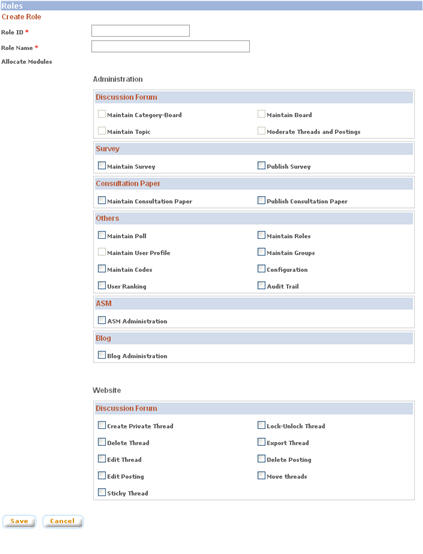

|
Roles
Each user of My Forum will be assigned a role, which determines the access permission to various functions in the system.
a. Click on "Roles" button on the left panel of the admin main page
b. The "Role List" page lists down all roles with the number of users assigned the role.
1. Create Role
a. On the "Role List" page, click on "Create Role" button.
b. On the "Create Role" page, enter role details and the permissions for the role. The list of functions available depends on the permission that the user has. A user cannot give permission to functions that the user himself / herself doesn't have. Click on "Save" button to create the role. NOTE: System does not allow duplicate role ID.

2. Modify Role
a. On the "Role List" page, click on the role name
b. On the "View / Modify Role" page, make necessary modifications. Role ID is not editable. Check the "Set as default role" checkbox to set the role as the default role for new users. Click on "Save" button to save modifications made. NOTE: Main administrator role is not editable
3. Delete Role
On the "View / Modify Role" page, click on "Delete" button to delete the role. NOTE: System does not allow a role to be deleted if the role are assigned to users or set as default role.
|